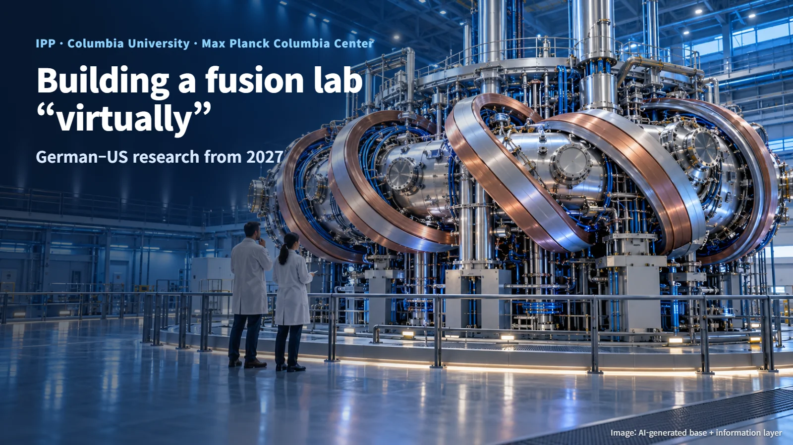
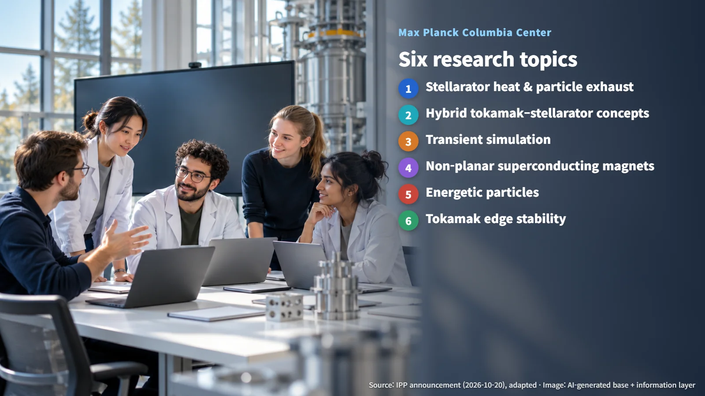
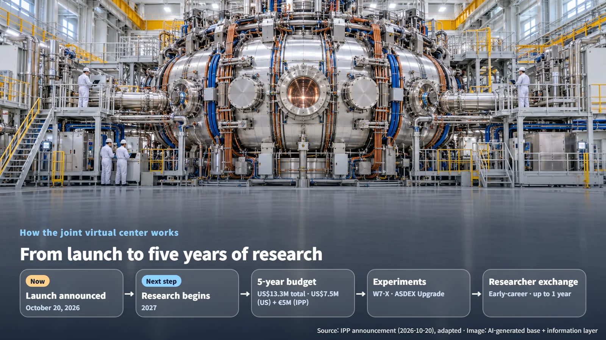

Germany · United States · Fusion Research
Germany and the US Build a "Virtual" Fusion Research Center: The Max Planck Columbia Center
IPP and Columbia University are launching a joint virtual research center that links research teams, experimental devices and researcher exchanges across the Atlantic.
When we picture a research institute, we usually think of a large building with laboratories and experimental halls. Two research institutions, one in Germany and one in the United States, have now announced that they will set up a "virtual research center" together. Let's walk through the announcement step by step and see what role a research center made of people and shared facilities, rather than a new building, can play in fusion research.

A Center Without a Building: What Does It Connect?
On October 20, 2026, the Max Planck Institute for Plasma Physics (IPP) in Germany and Columbia University in the United States announced the launch of a joint virtual research center for innovation in fusion science. It is called the Max Planck Columbia Center. The center is a framework of cooperation that links the two institutions' joint research teams and experimental facilities. Picture researchers on both sides of the Atlantic working on the same problems as a single team.
The center is planned to be co-led by Thomas Klinger and Carlos Paz-Soldan. Its budget is a total of US$13.3 million over five years starting in 2027, made up of US$7.5 million from the US side and €5 million from IPP. The money will support staff, research coordination, workshops and exchanges. The fact that the funding flows toward connecting people and research says a great deal about the character of this center. Its main investment goes into people, coordination and time spent working side by side, while the large experimental devices it draws on are already operating at IPP.
Six Research Topics
Fusion is a reaction in which light atomic nuclei join together and release energy. To make it happen, scientists have to create plasma, an extremely hot gas in which nuclei and electrons separate and move freely, and hold it inside a strong magnetic field. In effect, the plasma sits in an invisible "vessel" made of magnetic fields. The two best-known ways of building that vessel are the tokamak, a doughnut-shaped magnetic device, and the stellarator, which shapes its magnetic field with twisted coils.
The center will work in six research areas:
- Stellarator heat and particle exhaust: how a device can reliably absorb and remove the heat and particles that escape from the plasma
- Hybrid tokamak–stellarator concepts: design ideas that combine features of the two approaches
- Transient simulation: research that reproduces, by computation, events in which the plasma state changes abruptly within a very short time (transients)
- Non-planar superconducting magnets: superconducting magnets lose their electrical resistance at very low temperatures, so they can carry large currents and produce strong magnetic fields. In a non-planar magnet, the coil is curved in three dimensions instead of forming a flat ring
- Energetic particles: the behavior of particles in the plasma that carry exceptionally high energy
- Tokamak edge stability: research on keeping the outer boundary of the plasma steady
These six strands look at one magnetic vessel from different directions: heat, particles, magnets and the boundary. The motion of the plasma edge and sudden changes in the plasma state directly affect how much heat and how many particles reach the walls of the device, so understanding them is essential for running a device stably over long periods. Through this collaboration, the partners aim to link experimental data with numerical analysis to better predict heat exhaust, instabilities and magnet behavior.

W7-X, ASDEX Upgrade and the Exchange of People
The real strength of a virtual research center comes from the movement of people between devices. Columbia researchers will be able to take part in experiments at Wendelstein 7-X (W7-X) and ASDEX Upgrade, both operated by IPP. W7-X is a stellarator and ASDEX Upgrade is a tokamak-type device, so together they offer a stage for testing both approaches that appear in the six research areas.
The exchange of people is part of the design as well. Early-career researchers, such as students and postdoctoral researchers, can stay and work at the partner institution for up to one year, depending on the joint project. Imagine a young Columbia researcher receiving plasma data directly in a German experiment control room and then checking those results against computational models.
This kind of collaboration, which combines access to devices with long-term exchanges, has the potential to help build design and analysis capabilities. When researchers who have experienced the experimental floor firsthand refine computational models, the gap between models and experiments narrows accordingly. A model that has been checked against real measurements from both a stellarator and a tokamak becomes a more dependable tool for exploring designs that have yet to be built.
Next Step: Research Begins in 2027
The launch of the joint research effort has now been announced, and this announcement marks the starting point of a research collaboration that will run for five years. The actual research is scheduled to begin in 2027.

There are two main things to watch from here. First, how the projects and experimental plans for each of the six areas take concrete shape as research begins in 2027. Second, in what form the validation results for numerical analysis codes and the outcomes of magnet and plasma research are published and put to use.
Fusion research depends as much on the network of people who interpret data together as on the large devices that produce it. This research center, which starts out as a network rather than a building, is worth following to see what joint results it delivers from 2027 onward.